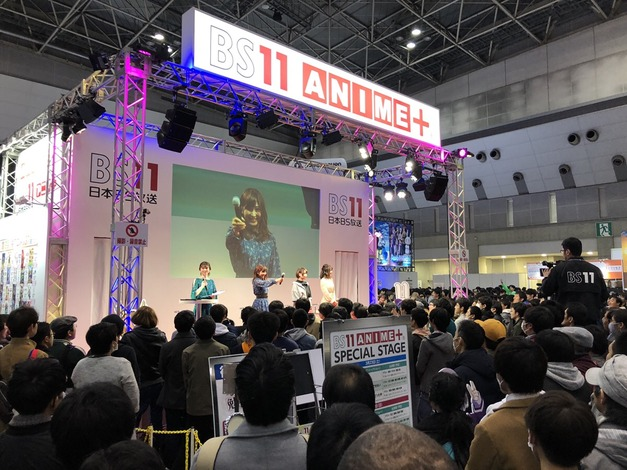
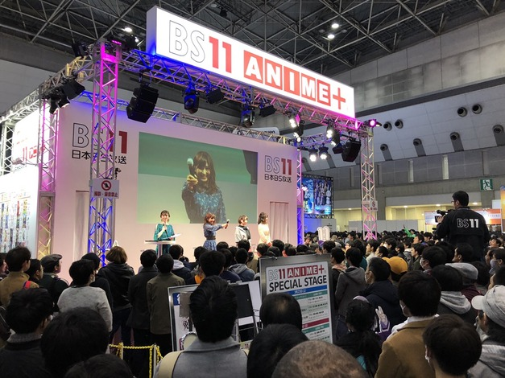

19.04
03
『Study』活動レポート ≪AnimeJapan2019≫更新！
2019年3月23、24日に東京ビッグサイトにて開催された世界最大級のアニメ・コンベンション“AnimeJapan 2019”。そこでTVアニメ『ぼくたちは勉強ができない』のヒロインを務める声優のうち3名から成る音楽ユニット・Studyは、2日間に渡って3ステージに出演した。その模様をお伝えしよう。
まず初日の3月23日は、“AnimeJapan”の巨大なメイン・ステージであるAJ“ROCK”ステージでのTVアニメ『ぼくたちは勉強ができない』スペシャルステージからスタート。ここでは古橋文乃役の白石晴香さん、緒方理珠役の富田美憂さん、武元うるか役の鈴代紗弓さんのStudyメンバーに加え、唯我成幸役の逢坂良太さん、桐須真冬役のLynnさん、小美浪あすみ役の朝日奈丸佳さんが登壇。放送直前となった『ぼく勉』の魅力についてたっぷり紹介するトークが行なわれた。

またこのステージでは、Study初となるライブも実施。デビュー曲「ready STUDY go!」を披露し、3人のキュートな振り付けとともにフレッシュな初ステージを終えた。
スペシャルステージを終えたStudyの3人は、制服から私服に着替えて次のイベントに移動。今度はLynnさんが司会を務めるBS11のブースにて、トーク・イベントを行なった。

真冬役のLynnさんにとってはかわいい後輩であるStudyの3人は、アフレコ現場でもとにかく仲がいい印象だそう。しかし白石さん曰く、現場では「さゆみん（鈴代さん）と美憂ちゃん（富田さん）がお互いにイジリ合っている」とのこと。「この前の収録現場でケータリングの小さいグミを見て、さゆが『美憂ちゃんサイズだね』って言ってきたんですよ！（笑）」という富田さんに対し、鈴代さんは「違うよ！ 本当に小さくてかわいいっていう意味で言ったの！ 愛はあるよ！」と返し、最後は富田さんが鈴代さんに「今日も天然絶好調だね！」と締め、その間に挟まれる白石さん……というStudyのいつもの風景がこのステージでも展開された。
翌3月24日はアニプレックスのブースにてトーク・イベント。今回は構成作家の長田
宏さんが補佐に立ちつつも、基本は3人がメインとなるStudyによるイベント。昨日のステージを観たというティーチャー（＝ファン）も大勢詰めかけ、ステージ前は人で溢れかえっていた。途中のコーナーでは、「ready STUDY go!」のMVの収録風景が映像や写真で公開されると、すでに話題にもなっている3人による“絵しりとり”の模様がスクリーンに映し出され、独特なタッチのイラストに笑いが起こる。
続いてのコーナーは、理珠のボードゲーム好きに倣って、カードに書かれたモンスターに名前をつけて、そのモンスターが出たときにいち早くその名前を言った人の勝ちという「ナンジャモンジャ」というカードゲームをプレイ。モンスターの名前をティーチャーが決め、Studyの3人がプレイすることになったのだが、ここで抜群の記憶力と反射神経を見せたのが白石さん。見事優勝を果たし、商品のクレープをゲット。最終的にはほかふたりにも仲良く分け合ってその味に舌鼓を打っていた。
2日間で巨大ステージでのライブ、先輩とのトークショー、そして3人のみでのトークという“AnimeJapan”の3つのステージを終えたStudy。『ぼく勉』のキャストとして、そしてStudyとしてTVアニメ放送が目前に迫るなか充実した2日を過ごせたようだ。 さて、2日目のステージを終えた3人を楽屋で直撃。それぞれにAJの感想を伺った。
白石晴香：最初の“ROCK”ステージは歌唱があるということで、そこでの緊張がいちばん大きかったです。LIVEパートではティーチャーのみなさんにステージを盛り上げてくれたので、緊張もほぐれ心から楽しめ頑張れました。ふたつめのBS11さんのステージでは、MCのLynnさんがまるで本当の先生のようで、3人の和気あいあいとしたところをLynnさんにいろいろ突っ込んでいただいて（笑）、アフレコブースと同じような空間の、素のままの私たちを見ていただけたんじゃないかなと思っています。2日目のステージはティーチャーのみなさんとゲームができて、Studyのみんなとご褒美のクレープを食べられてすごく楽しかったです。3ステージとも違った楽しさがあった、充実した2日間でした。Studyとしては、まだお見せできていなかった表情も見ていただけたと思いますし、『ぼく勉』とともにこれからもっともっといろんな方に知ってもらえるように、より一層頑張っていこうと思いました。
富田美憂：最初のステージはStudyとして歌って踊るというのが初めてだったので、すごく緊張していました。でもティーチャーのみなさんもすごく乗ってくださって、「どうしよう！ 緊張する！」って思っていたのが、今はいったんホッとひと段落しています。メインキャストも揃ってイベントできたこともよかったですね。ふたつ目のステージも最初のステージとはまた違った話もできて、特に最初のステージの裏側を話すことができてすごく楽しかったです。3つ目のステージも、Studyのメンバーだけで登壇したのは初めてだったので、「ちゃんと進行できるかな？」という気持ちはあったんですけど（笑）、理珠の好きなボードゲームをティーチャーのみなさんを巻き込んで楽しめたステージになったんじゃないかなと思います。また機会があったら一緒にゲームができるイベントもやってみたいですね。次の先行上映会でも歌って踊る機会があるので、そこに向けてみんなでレッスンを頑張りたいと思います。
鈴代紗弓：AJでは３つのステージに出させていただいて、まずたくさんのティーチャーのみなさまとともにこうしてイベントができたことがすごくうれしかったです。初めてのこともたくさんあって“勉強”になりましたし、先輩でもあるおふたりにも色々とサポートしていただいて、感謝の気持ちでいっぱいでした。スタッフの皆さんにも「大丈夫だよ」と声をかけていただいたり、何よりティーチャーの皆様が一緒に盛り上がってくださって、すべてが本当にありがたいことだと感じました。また、Studyとしての歌唱は初めてだったのにもかかわらず、ティーチャーのみなさまが盛り上がってくださったのが本当にうれしくて、今後さらに盛り上げていきたいと思いましたし、自分たちだけじゃなくて見てくださるみなさまも楽しんでもらえるようなイベントづくりができるように頑張りたいと思いました。あとティーチャーのみなさまとまた一緒に何かのボードゲームもできればいいなと思いました！ ティーチャーのみなさまがいてくださってこそと感じておりますので、これからも『ぼく勉』そしてStudyの応援をよろしくお願いします！
（文・澄川龍一）
まず初日の3月23日は、“AnimeJapan”の巨大なメイン・ステージであるAJ“ROCK”ステージでのTVアニメ『ぼくたちは勉強ができない』スペシャルステージからスタート。ここでは古橋文乃役の白石晴香さん、緒方理珠役の富田美憂さん、武元うるか役の鈴代紗弓さんのStudyメンバーに加え、唯我成幸役の逢坂良太さん、桐須真冬役のLynnさん、小美浪あすみ役の朝日奈丸佳さんが登壇。放送直前となった『ぼく勉』の魅力についてたっぷり紹介するトークが行なわれた。
またこのステージでは、Study初となるライブも実施。デビュー曲「ready STUDY go!」を披露し、3人のキュートな振り付けとともにフレッシュな初ステージを終えた。
スペシャルステージを終えたStudyの3人は、制服から私服に着替えて次のイベントに移動。今度はLynnさんが司会を務めるBS11のブースにて、トーク・イベントを行なった。

真冬役のLynnさんにとってはかわいい後輩であるStudyの3人は、アフレコ現場でもとにかく仲がいい印象だそう。しかし白石さん曰く、現場では「さゆみん（鈴代さん）と美憂ちゃん（富田さん）がお互いにイジリ合っている」とのこと。「この前の収録現場でケータリングの小さいグミを見て、さゆが『美憂ちゃんサイズだね』って言ってきたんですよ！（笑）」という富田さんに対し、鈴代さんは「違うよ！ 本当に小さくてかわいいっていう意味で言ったの！ 愛はあるよ！」と返し、最後は富田さんが鈴代さんに「今日も天然絶好調だね！」と締め、その間に挟まれる白石さん……というStudyのいつもの風景がこのステージでも展開された。
翌3月24日はアニプレックスのブースにてトーク・イベント。今回は構成作家の長田
宏さんが補佐に立ちつつも、基本は3人がメインとなるStudyによるイベント。昨日のステージを観たというティーチャー（＝ファン）も大勢詰めかけ、ステージ前は人で溢れかえっていた。途中のコーナーでは、「ready STUDY go!」のMVの収録風景が映像や写真で公開されると、すでに話題にもなっている3人による“絵しりとり”の模様がスクリーンに映し出され、独特なタッチのイラストに笑いが起こる。
続いてのコーナーは、理珠のボードゲーム好きに倣って、カードに書かれたモンスターに名前をつけて、そのモンスターが出たときにいち早くその名前を言った人の勝ちという「ナンジャモンジャ」というカードゲームをプレイ。モンスターの名前をティーチャーが決め、Studyの3人がプレイすることになったのだが、ここで抜群の記憶力と反射神経を見せたのが白石さん。見事優勝を果たし、商品のクレープをゲット。最終的にはほかふたりにも仲良く分け合ってその味に舌鼓を打っていた。
2日間で巨大ステージでのライブ、先輩とのトークショー、そして3人のみでのトークという“AnimeJapan”の3つのステージを終えたStudy。『ぼく勉』のキャストとして、そしてStudyとしてTVアニメ放送が目前に迫るなか充実した2日を過ごせたようだ。 さて、2日目のステージを終えた3人を楽屋で直撃。それぞれにAJの感想を伺った。
白石晴香：最初の“ROCK”ステージは歌唱があるということで、そこでの緊張がいちばん大きかったです。LIVEパートではティーチャーのみなさんにステージを盛り上げてくれたので、緊張もほぐれ心から楽しめ頑張れました。ふたつめのBS11さんのステージでは、MCのLynnさんがまるで本当の先生のようで、3人の和気あいあいとしたところをLynnさんにいろいろ突っ込んでいただいて（笑）、アフレコブースと同じような空間の、素のままの私たちを見ていただけたんじゃないかなと思っています。2日目のステージはティーチャーのみなさんとゲームができて、Studyのみんなとご褒美のクレープを食べられてすごく楽しかったです。3ステージとも違った楽しさがあった、充実した2日間でした。Studyとしては、まだお見せできていなかった表情も見ていただけたと思いますし、『ぼく勉』とともにこれからもっともっといろんな方に知ってもらえるように、より一層頑張っていこうと思いました。
富田美憂：最初のステージはStudyとして歌って踊るというのが初めてだったので、すごく緊張していました。でもティーチャーのみなさんもすごく乗ってくださって、「どうしよう！ 緊張する！」って思っていたのが、今はいったんホッとひと段落しています。メインキャストも揃ってイベントできたこともよかったですね。ふたつ目のステージも最初のステージとはまた違った話もできて、特に最初のステージの裏側を話すことができてすごく楽しかったです。3つ目のステージも、Studyのメンバーだけで登壇したのは初めてだったので、「ちゃんと進行できるかな？」という気持ちはあったんですけど（笑）、理珠の好きなボードゲームをティーチャーのみなさんを巻き込んで楽しめたステージになったんじゃないかなと思います。また機会があったら一緒にゲームができるイベントもやってみたいですね。次の先行上映会でも歌って踊る機会があるので、そこに向けてみんなでレッスンを頑張りたいと思います。
鈴代紗弓：AJでは３つのステージに出させていただいて、まずたくさんのティーチャーのみなさまとともにこうしてイベントができたことがすごくうれしかったです。初めてのこともたくさんあって“勉強”になりましたし、先輩でもあるおふたりにも色々とサポートしていただいて、感謝の気持ちでいっぱいでした。スタッフの皆さんにも「大丈夫だよ」と声をかけていただいたり、何よりティーチャーの皆様が一緒に盛り上がってくださって、すべてが本当にありがたいことだと感じました。また、Studyとしての歌唱は初めてだったのにもかかわらず、ティーチャーのみなさまが盛り上がってくださったのが本当にうれしくて、今後さらに盛り上げていきたいと思いましたし、自分たちだけじゃなくて見てくださるみなさまも楽しんでもらえるようなイベントづくりができるように頑張りたいと思いました。あとティーチャーのみなさまとまた一緒に何かのボードゲームもできればいいなと思いました！ ティーチャーのみなさまがいてくださってこそと感じておりますので、これからも『ぼく勉』そしてStudyの応援をよろしくお願いします！
（文・澄川龍一）